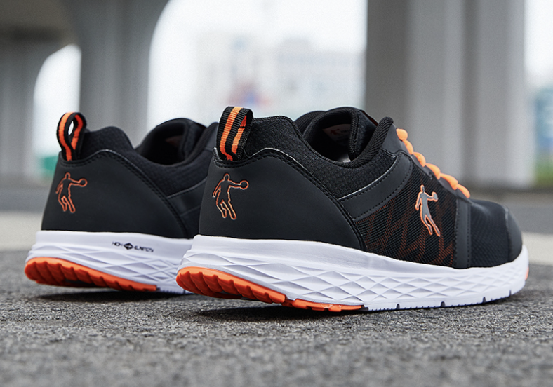
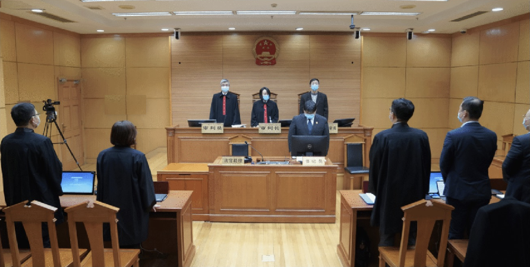

乔丹案:
一个姓名
的边界
课程作业 · 案例分析
迈克尔·乔丹诉乔丹体育 · 2026年11月
案情程序要件分析经济法视角责任赔偿总结答辩
乔丹案 · 课程作业2
Overview
案情概览
当事人
原告迈克尔·乔丹,前NBA球员,在中国以“乔丹”广为人知。被告乔丹体育,国内运动品牌,持有大量含“乔丹”的商标。
乔丹
vs 乔丹体育
争议
乔丹体育把“乔丹”注册为商标和企业字号,还用了23号和乔丹之子名字的译名。乔丹认为这侵害了他的姓名权,并让公众误以为两者有关联。
姓名权
与商标
结果
行政线:2020年4月最高法再审,乔丹胜诉。民事线:判决停止使用、公开道歉,赔偿30万元,另付合理开支5万元。
35万元
案情程序要件分析经济法视角责任赔偿总结答辩
乔丹案 · 课程作业3
Administrative line
行政线:商标确权之诉
争议商标:第6020569号“乔丹”,第28类 · 再审申请人乔丹 · 被申请人商评委 · 一审第三人乔丹体育 · 指导案例113号
02 · 北京一中院
(2014)一中行(知)初字第9163号
驳回诉请
03 · 北京高院
(2015)高行(知)终字第1915号
维持原判
04 · 最高法再审
(2016)最高法行再27号
提审改判:撤销原审判决和被诉裁定,责令商评委重新裁定
最高法认定:外文姓名的中文译名受保护,须同时具备三个条件
一 · 知名度
在我国有一定知名度,为相关公众所知悉
三 · 稳定对应
两者已建立稳定对应关系,不要求“唯一对应”
恶意抢注不会因后续宣传、获奖或市场规模而合法化。依据:2001年修正《商标法》第31条(现行第32条)
案情程序要件分析经济法视角责任赔偿总结答辩
乔丹案 · 课程作业4
Civil line
民事线:姓名权侵权之诉
原告乔丹;被告乔丹体育、销售商百仞贸易 · 2012年3月上海二中院受理,双方一致选择适用中国法律 · 2020年12月30日一审判决
加害行为
擅自注册“乔丹”商标、登记“乔丹”商号,还把“23”和两个儿子的中文译名注册为商标
过错
明知乔丹知名度高仍注册,指向性明显,具有导致或放任公众混淆的故意
损害后果
因果关系
停用商标
停止使用涉“乔丹”商标;超过五年争议期的,以区别性标识注明与原告无关
销售商百仞贸易
不具备共同侵权故意,不构成共同侵权,但今后不得再销售侵权产品。其余诉讼请求被驳回。
行政线管商标该不该注册,最多撤销重裁、没有赔偿;民事线管已造成的损害,可判停止侵害、赔礼道歉和赔偿。两条线各管一段。
案情程序要件分析经济法视角责任赔偿总结答辩
乔丹案 · 课程作业5
程序讲完了。
中乔到底
侵了什么?
庭审现场:法庭上出示乔丹体育的球员剪影标志,旁边是乔丹穿23号球衣的照片。图片来源:网络
接下来
加害行为与过错
损害与因果链
混淆与搭便车
判决与赔偿
案情程序要件分析经济法视角责任赔偿总结答辩
乔丹案 · 课程作业6
Elements
加害行为与过错
加害行为
① 把“乔丹”注册为商标,并作为企业字号使用。
② 在商标里用23号、乔丹之子名字的中文译名。
③ 批量申请,形成约200件相关商标。
过错
① 明知乔丹在中国长期广泛知名,仍以“乔丹”申请注册。
② 法院认定其有使公众误认的明显意图。
③ “乔丹只是西方常见姓氏”的抗辩没有被采纳。

左:乔丹体育的球员剪影标志。右:Air Jordan(飞人)标志。两个标志都是球员剪影加篮球,构图相近。
图片来源:网络
案情程序要件分析经济法视角责任赔偿总结答辩
乔丹案 · 课程作业7
Elements
损害与因果链
行为注册、使用“乔丹”
→
误认公众以为有代言、授权
→
损害乔丹对姓名的控制被侵占
→
后果乔丹体育借名气获利
损害是什么
姓名权人原本有权决定谁能使用自己的姓名、怎么使用。注册成商标后,这项控制被架空,乔丹的名气被拿去替另一家企业的商品背书。据美国《体育画报》报道,乔丹体育曾开出约6000家门店。
因果怎么连
名气是起点,误认是中间环节。没有“乔丹”这个名字,公众不会把乔丹体育的商品和乔丹联系起来。
乔丹体育门店:招牌是“乔丹体育”和球员剪影,看上去像乔丹的品牌。
图片来源:网络
案情程序要件分析经济法视角责任赔偿总结答辩
乔丹案 · 课程作业8
Economic law
混淆与搭便车
混淆
消费者看到“乔丹”,以为商品出自乔丹或经他授权。
市场上的信号被扰乱,消费者的选择建立在错误信息上。
搭便车
乔丹体育没有付出相应成本,就拿到了乔丹多年积累的知名度。
这笔商誉本该由乔丹自己决定怎么变现。

乔丹体育的跑鞋,鞋跟和鞋面都印着球员剪影。
图片来源:网络
放在经济法里看:混淆伤害消费者,搭便车伤害竞争者,两者合在一起,就破坏了公平竞争的市场秩序。
案情程序要件分析经济法视角责任赔偿总结答辩
乔丹案 · 课程作业9
最高人民法院 · 判决意旨(据报道转述)
未经许可把他人的姓名注册为商标,容易让公众以为商品与他有代言、许可等联系。
依据:2001年修正《商标法》第31条(现行第32条),申请商标注册不得损害他人现有的在先权利。
案情程序要件分析经济法视角责任赔偿总结答辩
乔丹案 · 课程作业10
Judgment
判决结果
02
停止使用商标
停止使用涉“乔丹”商标;超过五年争议期的,须以区别性标识注明与乔丹无关
04
赔偿
30万元精神损害抚慰金 + 5万元合理支出

2020年12月30日,上海二中院对乔丹诉乔丹体育公司、百仞贸易公司姓名权纠纷案作出一审宣判。图片来源:上海二中法院
为什么商标处理是分层的?一般商标停止使用。已超过五年争议期、不可撤销的商标,法院没有强制停用,而是要求用区别性标识向公众注明与乔丹无关联。
合理支出是什么?原告打官司实际花掉的必要维权成本,如律师费、公证费。原告主张114万元,法院审查后只支持5万元。
赔偿合计:30万元 + 5万元 = 35万元。
案情程序要件分析经济法视角责任赔偿总结答辩
乔丹案 · 课程作业11
Compensation
天价索赔为何“骨折”
原告主张
50,000,001元
精神损害抚慰金
+ 114万元合理支出,合计超过5,100万元
未另行主张“经济损失”
法院判决
300,000元
精神损害抚慰金
+ 5万元合理支出 = 35万元
原因一 · 请求结构限定了裁判空间
原告只请求精神损害赔偿和合理开支,没有主张经济损失。精神损害抚慰金看侵权人的过错、手段、后果和当地生活水平,不等于被告赚了多少。
原因二 · 姓名商业化损失的举证与计算存在制度空白
最高法在行政再审中承认,知名人物的姓名蕴含巨大经济利益。但民事上缺少姓名商业化损失的成熟计算规则,难以举证量化。
案情程序要件分析经济法视角责任赔偿总结答辩
乔丹案 · 课程作业12
Conclusion
三个结论
01
姓名权可以成为商标争议中的在先权利,未经许可注册他人姓名会被撤销。
02
行政线救的是商标,民事线救的是损害,两条线各管一段,不能互相代替。
03
赔偿多少,取决于原告怎么提诉讼请求,而不只看被告赚了多少。
案情程序要件分析经济法视角责任赔偿总结答辩
乔丹案 · 课程作业13
Q & A
答辩预案
Q1 为什么赔得这么少?
原告只请求精神损害赔偿和合理开支,没有主张经济损失。法院按诉求判,所以是30万加5万。
Q2 商标已注册,怎么还侵权?
注册不等于合法。商标法第31条规定,不得损害他人在先权利,姓名权就是在先权利。
Q3 肖像权为什么没被支持?
涉案图形只是黑色人形剪影,没有能识别到乔丹本人的个人特征,所以不构成肖像。
案情程序要件分析经济法视角责任赔偿总结答辩
乔丹案 · 课程作业14
谢谢,
请提问
案例 迈克尔·乔丹诉乔丹体育
来源 最高人民法院判决 · 公开新闻报道
汇报 小组成员 1–6 号